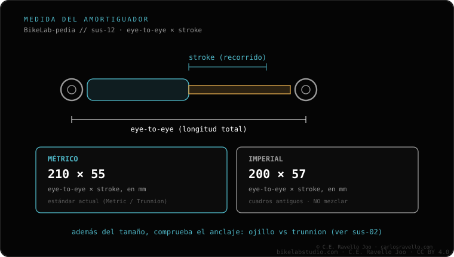

El amortiguador trasero se mide por eye-to-eye (distancia entre los centros de los dos anclajes) y stroke (recorrido del vástago); por ejemplo 210x55 o 230x60 mm. Debe coincidir EXACTO con el cuadro: un eye-to-eye equivocado cambia la geometría y el ratio de palanca, y un stroke mayor puede hacer que la rueda golpee el tubo de sillín. Se expresa en métrico (210x55) o imperial (8.5x2.5"). Si tu cuadro es de anclaje especial, mira también métrico vs trunnion; y si revisas toda la suspensión, empieza por qué horquilla le entra a tu bici.
No es una talla aproximada: son dos números que el cuadro fija. Equivocarse aquí no es "queda un poco distinto", es geometría y holgura comprometidas.
Eye-to-eye. Es la distancia entre los centros de los dos ojales de anclaje del amortiguador, con la suspensión extendida. Define dónde encaja en el cuadro; si no es la correcta, ni siquiera monta bien y altera la geometría.
Stroke. Es el recorrido del vástago: cuánto se comprime el amortiguador entre extendido y a fondo. El cuadro está diseñado para un stroke concreto; uno mayor puede llevar la rueda a golpear el tubo de sillín al comprimirse.
El eye-to-eye equivocado mueve los puntos de pivote y cambia el ratio de palanca de la suspensión, además de la geometría de la bici. El stroke equivocado, sobre todo si es mayor, puede acercar la rueda al tubo de sillín hasta golpearlo en compresión. Por eso ambas cotas deben coincidir exacto con lo que pide tu cuadro.

Esta medida es hermana de cómo se ancla el amortiguador: revisa métrico vs trunnion para no confundir el tipo de montaje. Y si estás revisando toda la suspensión, empieza por qué horquilla le entra a tu bici para que delante y detrás vayan acordes.
Dinos el modelo de tu cuadro y te confirmamos el eye-to-eye y el stroke que pide. Escríbenos por WhatsApp
Por eye-to-eye (entre centros de anclaje) y stroke (recorrido del vástago), p. ej. 210x55 o 230x60 mm. Ambas deben coincidir exacto con el cuadro.
Un eye-to-eye equivocado cambia la geometría y el ratio de palanca; un stroke mayor puede hacer que la rueda golpee el tubo de sillín.
Es la misma medida en otra unidad: métrico en mm (210x55), imperial en pulgadas (8.5x2.5"). Sabe en cuál viene tu cuadro.
© 2026 BikeLab Studio. Contenido bajo CC BY 4.0: puedes copiarlo, traducirlo y publicarlo, incluso con fines comerciales. La cita es obligatoria. Sin atribución, la licencia se revoca de forma automática (CC BY 4.0, §6.a) y el uso pasa a ser una infracción de derechos de autor: solicitamos la retirada del contenido y su desindexación. · Diseño y propiedad: Carlos Ravello Joo